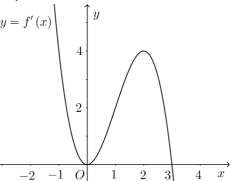
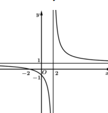
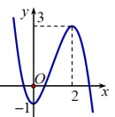
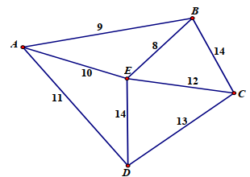
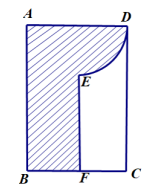

Thể tích vật thể tròn xoay: \( V = \int_a^b S(x) \, dx \), trong đó \( S(x) \) là diện tích mặt cắt vuông góc với trục quay.
Cho vật thể giới hạn bởi hai mặt phẳng có phương trình \( x = 0 \) và \( x = 2 \). Cắt phần vật thể này bởi mặt phẳng vuông góc với trục \( Ox \) tại điểm có hoành độ \( x \) (\( 0 \leq x \leq 2 \)). Biết rằng thiết diện là hình tam giác đều cạnh \( x^2 \sqrt{2 - x} \). Thể tích của vật thể là:
Chọn đáp án:
Lời giải:
Thiết diện là tam giác đều cạnh \( x^2 \sqrt{2 - x} \), diện tích: \( S = \frac{\sqrt{3}}{4} \left( x^2 \sqrt{2 - x} \right)^2 = \frac{\sqrt{3}}{4} x^4 (2 - x) = \frac{\sqrt{3}}{4} (2 x^4 - x^5) \).
Thể tích: \( V = \int_0^2 S(x) \, dx = \int_0^2 \frac{\sqrt{3}}{4} (2 x^4 - x^5) \, dx = \frac{\sqrt{3}}{4} \left[ \frac{2 x^5}{5} - \frac{x^6}{6} \right]_0^2 = \frac{\sqrt{3}}{4} \cdot \frac{32}{15} = \frac{8 \sqrt{3}}{15} \).
Đáp án: A.
Khoảng tứ phân vị: \( \Delta Q = Q_3 - Q_1 \), với \( Q_1, Q_3 \) là các tứ phân vị thứ nhất và thứ ba, tính từ tần số tích lũy.
Cho kết quả khảo sát về độ tuổi kết hôn của phụ nữ khu vực A như sau:
| Tuổi kết hôn | \([19; 22)\) | \([22; 25)\) | \([25; 28)\) | \([28; 31)\) | \([31; 34)\) |
|---|---|---|---|---|---|
| Số phụ nữ | 10 | 27 | 31 | 25 | 7 |
Khoảng tứ phân vị của mẫu số liệu là (kết quả làm tròn đến hàng phần mười):
Chọn đáp án:
Lời giải:
Tổng số phụ nữ: \( 10 + 27 + 31 + 25 + 7 = 100 \).
Bảng tần số tích lũy:
| Tuổi kết hôn | \([19; 22)\) | \([22; 25)\) | \([25; 28)\) | \([28; 31)\) | \([31; 34)\) |
|---|---|---|---|---|---|
| Tần số tích lũy | 10 | 37 | 68 | 93 | 100 |
Phương trình logarit: \( \log_a b + \log_a c = \log_a (b \cdot c) \). Điều kiện: Các biểu thức trong logarit phải dương.
Số nghiệm của phương trình \( \log_2 (x - 1) + \log_2 (x - 3) = 3 \) là:
Chọn đáp án:
Lời giải:
Điều kiện: \( x - 1 > 0 \), \( x - 3 > 0 \Rightarrow x > 3 \).
Phương trình: \( \log_2 (x - 1) + \log_2 (x - 3) = 3 \Rightarrow \log_2 [(x - 1)(x - 3)] = 3 \Rightarrow (x - 1)(x - 3) = 2^3 = 8 \).
\( x^2 - 4x + 3 = 8 \Rightarrow x^2 - 4x - 5 = 0 \Rightarrow x = 5 \) hoặc \( x = -1 \).
Kiểm tra: \( x = 5 \) thỏa điều kiện (\( 5 > 3 \)); \( x = -1 \) không thỏa (\( -1 < 3 \)).
Vậy phương trình có 1 nghiệm.
Đáp án: A.
Góc giữa hai đường thẳng: \( \cos \theta = \frac{|\vec{u}_1 \cdot \vec{u}_2|}{|\vec{u}_1| |\vec{u}_2|} \), với \( \vec{u}_1, \vec{u}_2 \) là vector chỉ phương.
Trong không gian với hệ tọa độ \( Oxyz \), cho hai đường thẳng \( d_1: \frac{x - 1}{1} = \frac{y + 2}{-2} = \frac{z - 1}{1} \) và \( d_2: \frac{x + 2}{-2} = \frac{y - 1}{1} = \frac{z - 1}{1} \). Góc giữa \( d_1 \) và \( d_2 \) là:
Chọn đáp án:
Lời giải:
Vector chỉ phương: \( \vec{u}_1 = (1; -2; 1) \), \( \vec{u}_2 = (-2; 1; 1) \).
\( \vec{u}_1 \cdot \vec{u}_2 = 1 \cdot (-2) + (-2) \cdot 1 + 1 \cdot 1 = -3 \).
\( |\vec{u}_1| = \sqrt{1^2 + (-2)^2 + 1^2} = \sqrt{6} \), \( |\vec{u}_2| = \sqrt{(-2)^2 + 1^2 + 1^2} = \sqrt{6} \).
\( \cos \theta = \frac{|-3|}{\sqrt{6} \cdot \sqrt{6}} = \frac{3}{6} = \frac{1}{2} \Rightarrow \theta = 60^\circ \).
Đáp án: AA.
Nguyên hàm: \( \int x^n \, dx = \frac{x^{n+1}}{n+1} + C \), \( \int \frac{1}{x} \, dx = \ln |x| + C \).
Nguyên hàm của hàm số \( f(x) = x^2 + \frac{1}{x^2} \) là:
Chọn đáp án:
Lời giải:
\( \int \left( x^2 + \frac{1}{x^2} \right) \, dx = \int x^2 \, dx + \int x^{-2} \, dx = \frac{x^3}{3} + \frac{x^{-1}}{-1} + C = \frac{x^3}{3} - \frac{1}{x} + C \).
Đáp án: A.
Tổng cấp số nhân vô hạn: \( S = \frac{u_1}{1 - q} \), với \( |q| < 1 \).
Cho dãy số \( u_n = \left( \frac{1}{4} \right)^{n-1} \). Tổng \( S = \sum_{n=1}^\infty u_n \) là:
Chọn đáp án:
Lời giải:
Dãy là cấp số nhân vô hạn với \( u_1 = 1 \), công bội \( q = \frac{1}{4} \).
Tổng: \( S = \frac{u_1}{1 - q} = \frac{1}{1 - \frac{1}{4}} = \frac{1}{\frac{3}{4}} = \frac{4}{3} \).
Đáp án: D.
Hàm số đạt cực đại tại \( x_0 \) nếu \( f'(x_0) = 0 \) và \( f''(x_0) < 0 \).
Cho hàm số \( y = f(x) \). Biết hàm số \( y = f'(x) \) liên tục trên \( \mathbb{R} \) và có đồ thị như hình vẽ. Hàm số đã cho đạt cực đại tại:
Chọn đáp án:
Lời giải:
Hàm số đạt cực đại khi \( f'(x) = 0 \) và \( f'(x) \) đổi dấu từ dương sang âm. Dựa vào đồ thị \( f'(x) \), tại \( x = 1 \), \( f'(x) = 0 \) và \( f'(x) \) đổi từ dương sang âm.
Đáp án: B.
Góc giữa hai vector: \( \cos \theta = \frac{\vec{a} \cdot \vec{b}}{|\vec{a}| |\vec{b}|} \).
Trong không gian với hệ tọa độ \( Oxyz \), cho hai vector \( \vec{a} = (1; -2; 1) \), \( \vec{b} = (-2; 1; 1) \). Tính góc giữa \( \vec{a} \) và \( \vec{b} \):
Chọn đáp án:
Lời giải:
\( \vec{a} \cdot \vec{b} = 1 \cdot (-2) + (-2) \cdot 1 + 1 \cdot 1 = -3 \).
\( |\vec{a}| = \sqrt{1^2 + (-2)^2 + 1^2} = \sqrt{6} \), \( |\vec{b}| = \sqrt{(-2)^2 + 1^2 + 1^2} = \sqrt{6} \).
\( \cos \theta = \frac{-3}{\sqrt{6} \cdot \sqrt{6}} = -\frac{1}{2} \Rightarrow \theta = 120^\circ \).
Đáp án: B.
Hàm số \( y = f(x) \) có tiệm cận xiên \( y = mx + n \) nếu \( \lim_{x \to \pm \infty} [f(x) - (mx + n)] = 0 \).
Đường tiệm cận xiên của đồ thị hàm số \( y = \frac{x^2 + 2x - 3}{x - 2} \) là:
Chọn đáp án:
Lời giải:
\( y = \frac{x^2 + 2x - 3}{x - 2} = x + 4 + \frac{5}{x - 2} \).
\( \lim_{x \to \pm \infty} \left( y - (x + 4) \right) = \lim_{x \to \pm \infty} \frac{5}{x - 2} = 0 \).
Vậy tiệm cận xiên là \( y = x + 4 \).
Đáp án: D.
Tính chất: \( \log_a (bc) = \log_a b + \log_a c \), \( \log_a a = 1 \).
Cho \( 0 < a \neq 1 \), \( b > 0 \). Biết \( \log_a b = 3 \), tính \( \log_a (a b) \):
Chọn đáp án:
Lời giải:
\( \log_a (a b) = \log_a a + \log_a b = 1 + 3 = 4 \).
Đáp án: D.
Trong tứ diện đều, các tính chất về trung điểm và tỷ lệ song song được sử dụng để tính khoảng cách.
Cho hình tứ diện đều \( ABCD \) có độ dài cạnh bằng 6 cm. Gọi \( M, N \) lần lượt là trung điểm cạnh \( BC, CD \), và \( G \) là trọng tâm tam giác \( ABD \). Mặt phẳng \( (GMN) \) cắt các cạnh \( AB, AD \) tại \( E, F \). Độ dài đoạn \( EF \) bằng:
Chọn đáp án:
Lời giải:
Vì \( MN \parallel BD \), đường thẳng qua \( G \) song song với \( BD \) cắt \( AB, AD \) tại \( E, F \). Ta có \( \frac{EF}{BD} = \frac{AG}{AI} = \frac{2}{3} \).
Trong tứ diện đều, \( BD = 6 \), nên \( EF = \frac{2}{3} \cdot 6 = 4 \, \text{cm} \).
Đáp án: A.
Tiệm cận ngang: \( y = \lim_{x \to \pm \infty} f(x) \). Tiệm cận đứng: \( x = c \) nếu \( \lim_{x \to c} f(x) = \pm \infty \).
Cho hàm số \( y = \frac{ax + b}{x + c} \) có đồ thị như hình vẽ. Tính giá trị của biểu thức \( P = 2a - b + 3c \):
Chọn đáp án:
Lời giải:
Tiệm cận ngang: \( y = a \Rightarrow a = 1 \).
Tiệm cận đứng: \( x = -c \Rightarrow c = -2 \).
Giao điểm với trục tung: \( y = \frac{b}{c} = \frac{b}{-2} = -1 \Rightarrow b = 2 \).
\( P = 2a - b + 3c = 2 \cdot 1 - 2 + 3 \cdot (-2) = 2 - 2 - 6 = -6 \).
Đáp án: B.
Đạo hàm: \( f'(x) = 3ax^2 + 2bx + c \). Cực trị tại \( f'(x) = 0 \). Tính đơn điệu dựa vào dấu của \( f'(x) \).
Cho hàm số \( f(x) = ax^3 + bx^2 + cx + d \) có đồ thị như hình vẽ. Xét các phát biểu sau:
Chọn đáp án cho từng phát biểu:
a)
b)
c)
d)
Lời giải:
a) Đúng. Hàm số đạt cực tiểu tại \( x = 0 \), \( f(0) = -1 \).
b) Đúng. \( \log_3 [f(x) + 6] = 2 \Rightarrow f(x) + 6 = 9 \Rightarrow f(x) = 3 \). Đồ thị \( y = f(x) \) cắt \( y = 3 \) tại hai điểm, nên phương trình có hai nghiệm.
c) Sai. Trong khoảng \( (2; 3) \), hàm số nghịch biến (do đồ thị đi xuống).
d) Đúng. \( f'(x) = 3ax^2 + 2bx + c \). Với \( f'(0) = 0 \), \( f'(2) = 0 \), \( f(0) = -1 \), \( f(2) = 3 \):
\( \left\{ \begin{array}{l} c = 0 \\ 12a + 4b + c = 0 \\ d = -1 \\ 8a + 4b + 2c + d = 3 \end{array} \right. \Rightarrow \left\{ \begin{array}{l} a = -1 \\ b = 3 \\ c = 0 \\ d = -1 \end{array} \right. \)
\( 2025a + b + c + d = 2025 \cdot (-1) + 3 + 0 - 1 = -2023 \).
Đáp án: a) Đúng, b) Đúng, c) Sai, d) Đúng.
Quãng đường: \( s(t) = \int v(t) \, dt \). Xe dừng khi \( v(t) = 0 \).
Một xe ô tô đang chạy với tốc độ 65 km/h thì người lái xe bất ngờ phát hiện chướng ngại vật trên đường cách đó 50 m. Người lái xe phản ứng mất 1 giây, sau đó đạp phanh khẩn cấp. Kể từ thời gian \( t \) (giây) từ lúc đạp phanh, vận tốc \( v(t) = -10t + 20 \) (m/s). Gọi \( s(t) \) là quãng đường xe đi được trong \( t \) giây kể từ lúc đạp phanh. Xét các phát biểu:
Chọn đáp án cho từng phát biểu:
a)
b)
c)
d)
Lời giải:
Đổi đơn vị: \( 65 \, \text{km/h} \approx 18 \, \text{m/s} \).
a) Đúng. \( s'(t) = v(t) \), nên \( s(t) = \int v(t) \, dt \).
b) Đúng. \( s(t) = \int (-10t + 20) \, dt = -5t^2 + 20t + C \). Tại \( t = 0 \), \( s(0) = 0 \Rightarrow C = 0 \Rightarrow s(t) = -5t^2 + 20t \).
c) Sai. Xe dừng khi \( v(t) = -10t + 20 = 0 \Rightarrow t = 2 \, \text{giây} \), không phải 20 giây.
d) Đúng. Quãng đường trong 1 giây phản ứng: \( 18 \cdot 1 = 18 \, \text{m} \). Quãng đường từ lúc phanh đến khi dừng: \( s(2) = -5 \cdot 2^2 + 20 \cdot 2 = 20 \, \text{m} \). Tổng quãng đường: \( 18 + 20 = 38 \, \text{m} < 50 \, \text{m} \), nên không va chạm.
Đáp án: a) Đúng, b) Đúng, c) Sai, d) Đúng.
Xác suất có điều kiện: \( P(B|A) = \frac{P(A \cap B)}{P(A)} \). Hai biến cố độc lập nếu \( P(A \cap B) = P(A) \cdot P(B) \).
Một công ty tham gia đấu thầu hai dự án. Khả năng thắng thầu các dự án lần lượt là 0,4 và 0,5. Khả năng thắng thầu cả hai dự án là 0,3. Gọi \( A, B \) lần lượt là biến cố thắng thầu dự án 1 và dự án 2. Xét các phát biểu:
Chọn đáp án cho từng phát biểu:
a)
b)
c)
d)
Lời giải:
\( P(A) = 0,4 \), \( P(B) = 0,5 \), \( P(A \cap B) = 0,3 \).
a) Sai. \( P(A) \cdot P(B) = 0,4 \cdot 0,5 = 0,2 \neq 0,3 = P(A \cap B) \), nên \( A \) và \( B \) không độc lập.
b) Đúng. \( P(B|A) = \frac{P(A \cap B)}{P(A)} = \frac{0,3}{0,4} = 0,75 \).
c) Sai. \( P(B|\bar{A}) = \frac{P(B) - P(A \cap B)}{1 - P(A)} = \frac{0,5 - 0,3}{1 - 0,4} = \frac{0,2}{0,6} = \frac{1}{3} \neq \frac{2}{3} \).
d) Sai. Xác suất thắng đúng 1 dự án: \( P(A \cap \bar{B}) + P(\bar{A} \cap B) = [P(A) - P(A \cap B)] + [P(B) - P(A \cap B)] = (0,4 - 0,3) + (0,5 - 0,3) = 0,1 + 0,2 = 0,3 \neq \frac{8}{15} \approx 0,533 \).
Đáp án: a) Sai, b) Đúng, c) Sai, d) Sai.
Khoảng cách từ điểm đến tâm mặt cầu lớn hơn bán kính thì điểm nằm ngoài mặt cầu.
Trong không gian hệ trục tọa độ \( Oxyz \) (đơn vị trên mỗi trục là kilômét), đài kiểm soát không lưu của một sân bay ở vị trí \( O(0; 0; 0) \) và được thiết kế phát hiện máy bay ở khoảng cách tối đa 600 km. Một máy bay đang chuyển động với vận tốc 900 km/h theo đường thẳng \( d \) có phương trình \( \left\{ \begin{array}{l} x = -1000 + 100t \\ y = -300 + 80t \\ z = 100\sqrt{11} \end{array} \right. \) (tính bằng giờ) và hướng về đài kiểm soát không lưu. Xét các phát biểu:
Chọn đáp án cho từng phát biểu:
a)
b)
c)
d)
Lời giải:
a) Sai. Bán kính vùng phát sóng là 600 km, không phải 300 km.
b) Sai. Thay phương trình đường thẳng vào \( x^2 + y^2 + z^2 = 360000 \):
\( (100t - 1000)^2 + (80t - 300)^2 + (100\sqrt{11})^2 = 360000 \Rightarrow 164t^2 - 2480t + 8400 = 0 \Rightarrow t = 10 \) hoặc \( t = \frac{210}{41} \).
Tọa độ: \( t = 10 \Rightarrow B(0; 500; 100\sqrt{11}) \), \( t = \frac{210}{41} \Rightarrow C\left( -\frac{20000}{41}; \frac{4500}{41}; 100\sqrt{11} \right) \).
Quãng đường \( BC \approx 625 \, \text{km} \). Thời gian: \( \frac{625}{900} = \frac{25}{36} \, \text{giờ} \neq \frac{4}{3} \, \text{giờ} \).
c) Đúng. Khoảng cách \( OM = \sqrt{(-500)^2 + 100^2 + (100\sqrt{11})^2} \approx 608 > 600 \), nên \( M \) nằm ngoài vùng kiểm soát.
d) Đúng. Phương trình mặt cầu bán kính 600 km: \( x^2 + y^2 + z^2 = 600^2 = 360000 \).
Đáp án: a) Sai, b) Sai, c) Đúng, d) Đúng.
Khoảng cách giữa hai đường thẳng: \( d(a, b) = d(A, (b)) \) nếu \( a \parallel (b) \). Khoảng cách từ điểm đến mặt phẳng: \( d(M, (P)) = \frac{|AM \cdot \vec{n}|}{|\vec{n}|} \).
Cho hình chóp tứ giác đều \( S.ABCD \), có cạnh đáy bằng 2, cạnh bên bằng \( 2\sqrt{2} \). Tính khoảng cách giữa hai đường thẳng \( AB \) và \( SD \) (kết quả làm tròn đến một chữ số thập phân).
Nhập đáp án:
Lời giải:
Gọi \( O \) là giao điểm của \( AC \) và \( BD \). Vì \( AB \parallel (SCD) \), nên \( d(AB, SD) = d(AB, (SCD)) = d(A, (SCD)) = 2 d(O, (SCD)) \).
Trong \( (ABCD) \), dựng \( OM \perp CD \) tại \( M \). Trong \( (SOM) \), dựng \( OH \perp SM \) tại \( H \).
\( OM = 1 \), \( SO = \sqrt{6} \). Ta có \( \frac{1}{OH^2} = \frac{1}{OM^2} + \frac{1}{SO^2} = \frac{1}{1} + \frac{1}{6} = \frac{7}{6} \Rightarrow OH = \frac{\sqrt{42}}{7} \).
\( d(AB, SD) = 2 \cdot OH = \frac{2 \sqrt{42}}{7} \approx 1,9 \).
Đáp án: 1,9.
Tìm đường đi qua tất cả các đỉnh đúng một lần và trở về điểm xuất phát với chi phí nhỏ nhất (bài toán TSP).
Một công ty vận tải cần giao hàng đến tất cả các thành phố \( A, B, C, D, E \). Chi phí di chuyển giữa các thành phố được mô tả trên hình. Xe giao hàng xuất phát từ một thành phố, đi qua tất cả các thành phố còn lại đúng một lần, sau đó trở lại thành phố ban đầu. Tìm chi phí thấp nhất của xe giao hàng.
Nhập đáp án:
Lời giải:
Xét các đường đi từ \( A \) và trở về \( A \):
| Đường đi | Chi phí |
|---|---|
| \( A \to B \to C \to E \to D \to A \) | \( 9 + 14 + 12 + 14 + 11 = 60 \) |
| \( A \to B \to E \to C \to D \to A \) | \( 9 + 8 + 12 + 13 + 11 = 53 \) |
| \( A \to E \to B \to C \to D \to A \) | \( 10 + 8 + 14 + 13 + 11 = 56 \) |
| \( A \to E \to D \to C \to B \to A \) | \( 10 + 14 + 13 + 14 + 9 = 60 \) |
| \( A \to D \to C \to E \to B \to A \) | \( 11 + 13 + 12 + 8 + 9 = 53 \) |
| \( A \to D \to E \to C \to B \to A \) | \( 11 + 14 + 12 + 14 + 9 = 60 \) |
Điểm cách đều ba điểm nằm trên mặt phẳng chứa ba điểm và thỏa mãn điều kiện khoảng cách bằng nhau.
Trong một buổi trình diễn thiết bị bay không người lái, ba drone lần lượt đến tại các điểm \( A(2; -2; 1) \), \( B(1; 1; 3) \), và \( C(-1; 0; 2) \). Tiếp đó, người điều khiển điều khiển một drone đến điểm \( M(a; b; c) \) cách đều ba điểm trên. Tính \( a + b + c \) (kết quả làm tròn đến hai chữ số thập phân).
Nhập đáp án:
Lời giải:
\( \vec{AB} = (-1; 3; 2) \), \( \vec{AC} = (-3; 2; 1) \).
Vector pháp tuyến: \( [\vec{AB}, \vec{AC}] = (-1; -5; 7) \).
Phương trình mặt phẳng \( (ABC) \): \( -x - 5y + 7z + 15 = 0 \Rightarrow a + 5b - 7c + 15 = 0 \).
\( M \) cách đều \( A, B, C \):
\( \left\{ \begin{array}{l} MA = MB \\ MA = MC \end{array} \right. \Rightarrow \left\{ \begin{array}{l} (a - 2)^2 + (b + 2)^2 + (c - 1)^2 = (a - 1)^2 + (b - 1)^2 + (c - 3)^2 \\ (a - 2)^2 + (b + 2)^2 + (c - 1)^2 = (a + 1)^2 + b^2 + (c - 2)^2 \end{array} \right. \)
\( \left\{ \begin{array}{l} 2a - 6b - 4c = -2 \\ 6a - 4b - 2c = 4 \end{array} \right. \)
Hệ phương trình: \( \left\{ \begin{array}{l} a + 5b - 7c = -15 \\ 2a - 6b - 4c = -2 \\ 6a - 4b - 2c = 4 \end{array} \right. \Rightarrow \left\{ \begin{array}{l} a = \frac{22}{25} \\ b = -\frac{3}{5} \\ c = \frac{46}{25} \end{array} \right. \)
\( a + b + c = \frac{22}{25} - \frac{3}{5} + \frac{46}{25} = \frac{53}{25} = 2,12 \).
Đáp án: 2,12.
Thể tích khối tròn xoay: \( V = \pi \int_a^b [f(x)]^2 \, dx \), với \( f(x) \) là bán kính mặt cắt.
Một vật trang trí có dạng khối tròn xoay tạo thành khi quay miền \( (R) \) (phần gạch chéo trong hình) quanh trục \( AB \). Biết \( ABCD \) là hình chữ nhật cạnh \( AB = 3 \, \text{cm} \), \( AD = 2 \, \text{cm} \); \( F \) là trung điểm của \( BC \); điểm \( E \) cách \( AD \) một đoạn bằng 1 cm. Thể tích của vật thể trang trí là \( a \, \text{cm}^3 \) (làm tròn đến hàng phần mười). Tính \( a \):
Nhập đáp án:
Lời giải:
Chọn hệ trục \( Oxy \): \( O \equiv A \), \( B \in Ox \), \( D \in Oy \). Tọa độ: \( A(0; 0) \), \( D(0; 2) \), \( B(3; 0) \), \( E(1; 1) \).
Đường tròn tâm \( I(0; 1) \) chứa cung \( ED \): \( x^2 + (y - 1)^2 = 1 \Rightarrow y = 1 + \sqrt{1 - x^2} \) (phần trên).
Thể tích: \( V = \pi \int_0^1 \left( 1 + \sqrt{1 - x^2} \right)^2 \, dx + \pi \int_1^3 1^2 \, dx \approx 16,5 \, \text{cm}^3 \).
Đáp án: 16,5.
Doanh thu cực đại đạt khi \( Q'(x) = 0 \) và \( Q''(x) < 0 \).
Trong trung tâm thương mại Lotte thành phố Vinh, có một nhà hàng bán buffet hải sản. Khi nhà hàng bán với giá 200 nghìn đồng một suất thì mỗi ngày bán được 100 suất. Cứ giảm giá 10 nghìn đồng thì số suất bán được tăng thêm 10 suất. Để doanh thu trong một ngày lớn nhất, nhà hàng cần bán một suất buffet với giá bao nhiêu nghìn đồng?
Nhập đáp án:
Lời giải:
Gọi \( x \) là số lần giảm giá 10 nghìn đồng. Giá bán: \( 200 - 10x \) (nghìn đồng). Số suất: \( 100 + 10x \).
Doanh thu: \( Q(x) = (100 + 10x) \cdot (200 - 10x) = -100x^2 + 1000x + 20000 \).
\( Q'(x) = -200x + 1000 = 0 \Rightarrow x = 5 \). \( Q''(x) = -200 < 0 \), nên \( x = 5 \) là cực đại.
Giá bán: \( 200 - 10 \cdot 5 = 150 \, \text{nghìn đồng} \).
Đáp án: 150.
Nhập họ và tên: